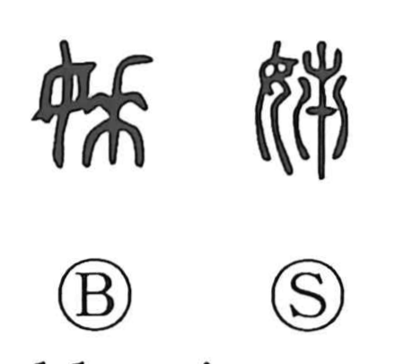

姉

Kun: ane | On: shi
older sister
Explanation
姉 is a phonosemantic character: the element 女 signals a woman, while 市 serves as the phonetic that gives the on-reading shi. The earlier form was 姊. It belongs to a family of terms for elder women—alongside 姐 and 婆—that once marked rank and social roles among women, from a motherly figure to the matron who led female ritual attendants. Within this lineage of titles for senior women, 姉 came to denote the elder sister.